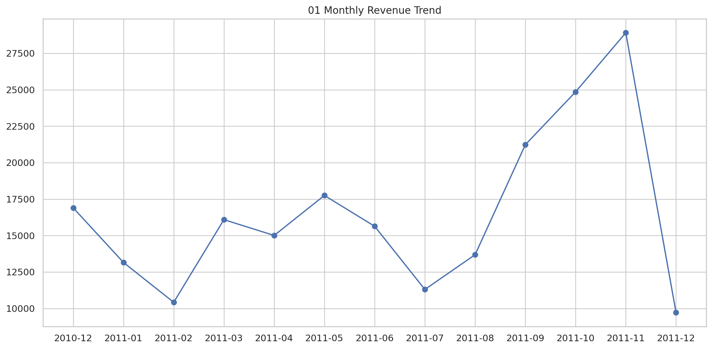
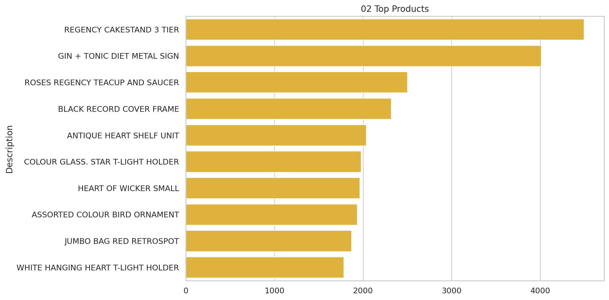
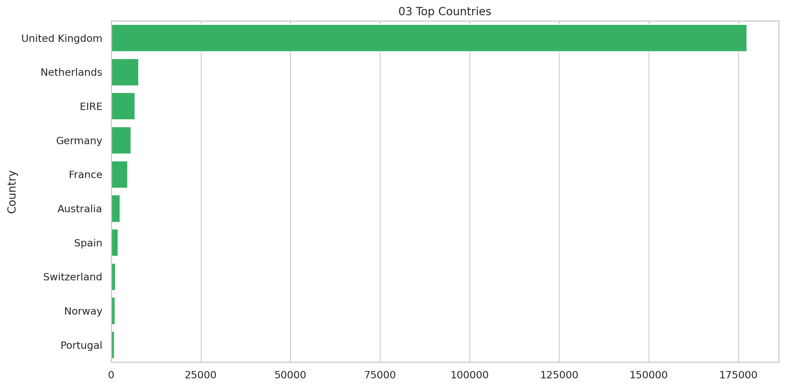
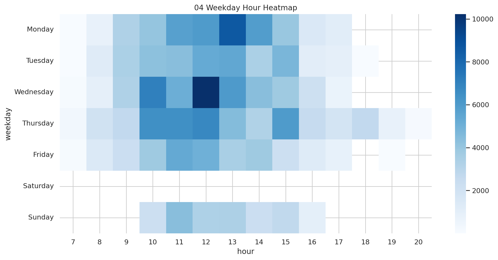
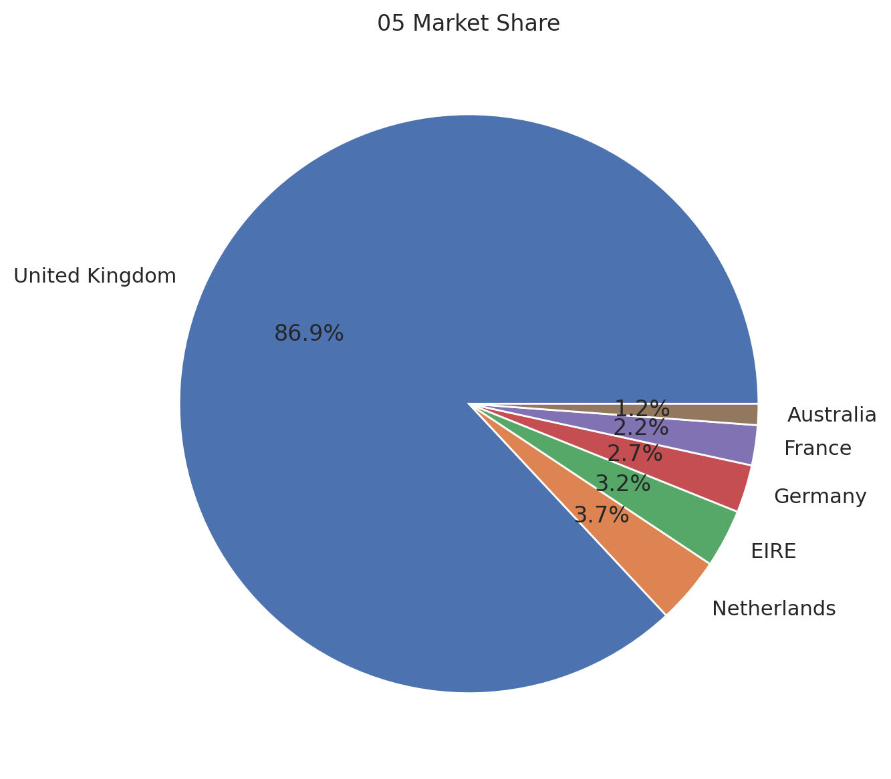
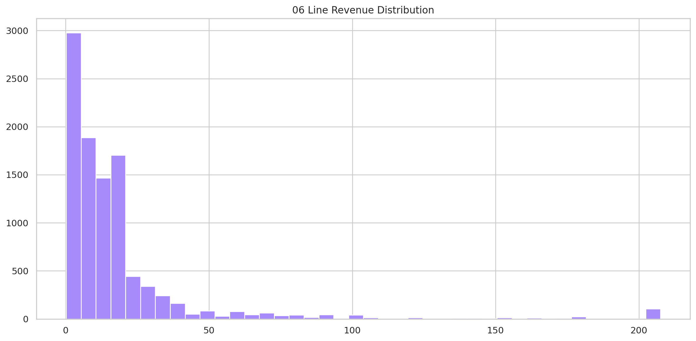
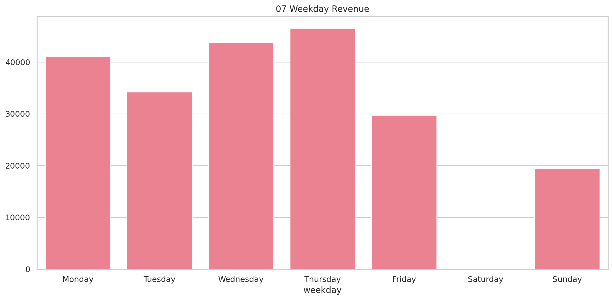
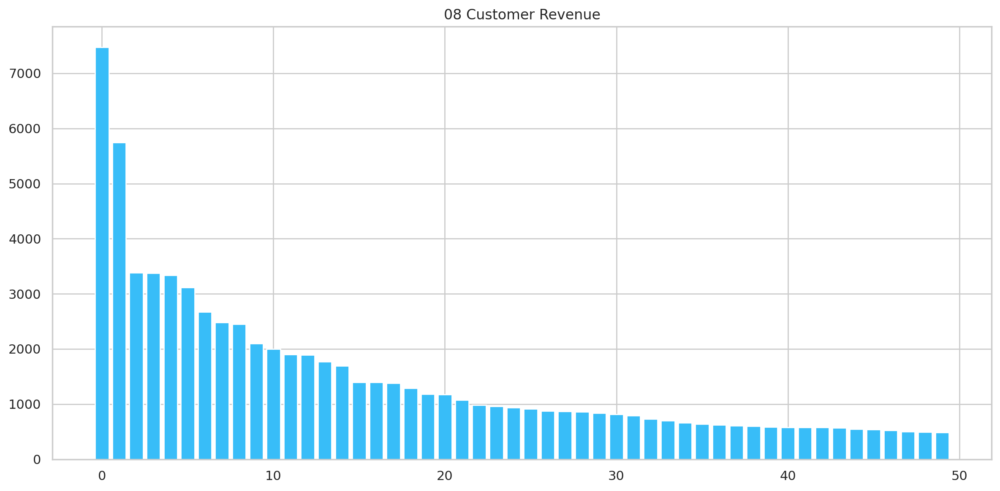

Transaction-level commercial performance, customer concentration, and demand timing.
Executive Summary
This report converts the supplied project data into decision-ready findings and supporting evidence.
Findings
United Kingdom contributes 82.6% of sample revenue and is the commercial anchor.
Revenue totals £214,660 across 6,417 invoices.
REGENCY CAKESTAND 3 TIER is the largest product by revenue at £4,496.
Thursday is the strongest weekday by revenue.
Top 10 customers contribute 16.8% of revenue.
Activity peaks at 12:00.
Methodology
Duplicate transaction rows were removed. The supplied line-level revenue field was aggregated across transactions, products, countries, weekdays, hours, and customers; results are limited to the supplied sample.
Visual Evidence

01 Monthly Revenue Trend

02 Top Products

03 Top Countries

04 Weekday Hour Heatmap

05 Market Share

06 Line Revenue Distribution

07 Weekday Revenue

08 Customer Revenue
Recommendations
Prioritize the most material measurable opportunity.
Track the core KPIs in the accompanying dashboard.
Refresh the analysis before implementing high-impact decisions.